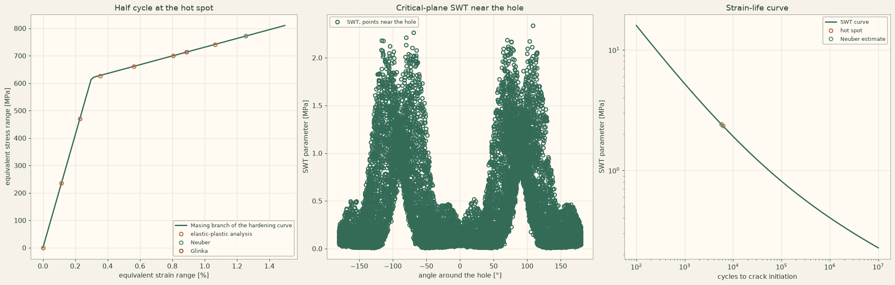
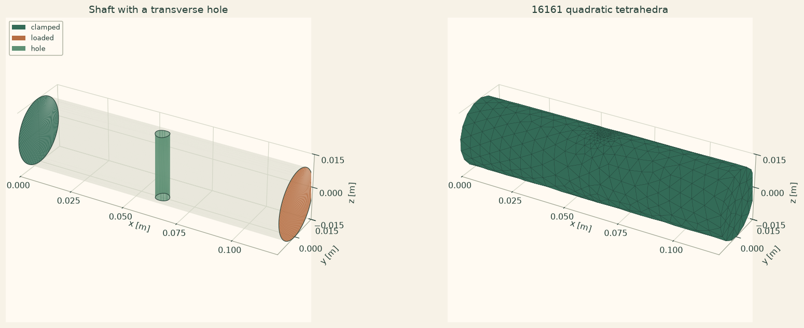

Docs › Examples › Elastic-plastic low-cycle fatigue of a shaft with a transverse hole
Fatigue · 3D
Elastic-plastic low-cycle fatigue of a shaft with a transverse hole
A steel shaft with a transverse hole carries fully reversed, in-phase tension and torsion; the edge of the hole yields in every cycle and the life follows from the stabilized cycle.
Run locally with OneSimulation. The example downloads are free. Running them requires an activated runtime. OneSimulation 1.0 · CPython 3.13 on macOS (Apple Silicon), Ubuntu 22.04 (x86-64), and Windows x64. Installation and activation · View pilot plans. Scope of the reference checks.


What it computes
OneSimulation reads the shaft from a STEP file and follows one and a half load cycles with 3D elastic-plastic small-strain analysis (von Mises plasticity with linear kinematic hardening, all quadrature points updated in one vectorized call); the stabilized cycle is evaluated with the Smith-Watson-Topper parameter on 2000 material planes at every point near the hole and the strain-life curve. The script that builds the STEP file comes with the notebook.
What it checks
On 3,523 mesh nodes the hotspot follows the Masing branch to within 0.88% of the strain range. The maximum critical-plane parameter is 2.3388 MPa, giving 6,157 cycles to initiation. The independent Neuber estimate gives 5,679 cycles. The earlier 1,673-node run gave 5,037 cycles. Both mesh density and the volume quadrature rule changed between the two runs.
Geometry
Save the STEP file cylinder_hole_low_cycle_fatigue_swt.step next to the notebook before running it.


The geometry script
The script cylinder_hole_low_cycle_fatigue_swt_geometry.py builds the geometry with the CAD objects of OneSimulation and writes the file. Change a dimension there, run it, and run the notebook again.
"""Geometry of the OneSimulation example "Low-cycle fatigue of a shaft with a transverse hole".
Builds a steel shaft of 30 mm diameter and 120 mm length along x with a transverse through-hole of
6 mm diameter at mid-length (axis along z) with the CAD objects of OneSimulation and writes
cylinder_hole_low_cycle_fatigue_swt.step. The faces are named clamped (x = 0), loaded (x = 120 mm),
hole and mantle.
"""
from onesim.cad.d3 import Cylinder
radius, length, hole = 0.015, 0.120, 0.003
shaft = Cylinder(radius=radius, length=length, axis=(1.0, 0.0, 0.0)) \
- Cylinder(radius=hole, length=2 * radius + 0.01, origin=(length / 2, 0.0, -radius - 0.005), axis=(0.0, 0.0, 1.0))
shaft = shaft.grouped(clamped=shaft.select(faces=lambda face: face.kind == "plane" and abs(face.center[0]) < 1e-9),
loaded=shaft.select(faces=lambda face: face.kind == "plane" and abs(face.center[0] - length) < 1e-9),
hole=shaft.select(faces=lambda face: face.kind == "cylinder" and face.radius < 0.01),
mantle=shaft.select(faces=lambda face: face.kind == "cylinder" and face.radius > 0.01))
shaft.save("cylinder_hole_low_cycle_fatigue_swt.step")The notebook
The complete notebook, cell by cell. Run it to produce the figures and the comparison printout.
A transverse hole for a pin or a lubrication channel raises the stresses of a shaft locally by a factor of two to three. Under high loads the edge of the hole then yields in every cycle while the rest of the shaft stays elastic, and the life is governed by the local plastic strain: low-cycle fatigue. Its classical measure is the strain-life curve
and with a mean stress the Smith-Watson-Topper (SWT) form \(\sigma_{n,\max}\,\varepsilon_{n,a}=\frac{\sigma_f'^2}{E}(2N)^{2b}+\sigma_f'\varepsilon_f'(2N)^{b+c}\), evaluated on the material plane where the product of the normal strain amplitude and the peak normal stress is largest (critical plane).
Setup. Shaft diameter \(D=30\) mm, length 120 mm, transverse hole of \(d=6\) mm diameter at mid-length. Fully reversed, in-phase loading: an axial force with a nominal stress amplitude of 180 MPa and a torque with a nominal surface shear amplitude of 100 MPa (gross section, without the hole). Steel of the SAE 1045 type: \(E=206\) GPa, \(\nu=0.3\); cyclic stress-strain curve of Ramberg-Osgood type (\(K'=1258\) MPa, \(n'=0.208\)), represented in the elastic-plastic analysis by linear kinematic hardening fitted to it at 0.2 % and 1 % plastic strain (initial yield 310 MPa, hardening modulus 17.3 GPa); strain-life constants \(\sigma_f'=948\) MPa, \(b=-0.092\), \(\varepsilon_f'=0.26\), \(c=-0.445\). The shaft comes from the CAD file cylinder_hole_low_cycle_fatigue_swt.step, written by cylinder_hole_low_cycle_fatigue_swt_geometry.py with the CAD objects of OneSimulation.
| face | condition |
|---|---|
clamped | all displacements 0 |
loaded | traction \(\lambda(t)\,[\sigma_n,\;-z\,T/J,\;y\,T/J]\) (tension and torsion) |
hole, mantle | free |
The load factor \(\lambda\) runs \(0\to1\to-1\to1\); with linear kinematic hardening the cycle from \(-1\) to \(1\) is already the stabilized one.
Checks. (1) The reactions at the clamped end balance the force and torque applied to the end face. (2) Under proportional loading the hot spot follows the Masing-doubled hardening curve in equivalent quantities, and its strain range lies between the predictions of Neuber's rule (\(\Delta\sigma\,\Delta\varepsilon=\Delta\sigma_e^2/E\)) and of Glinka's equal strain energy density, both applied to the elastic equivalent stress range with the same curve. (3) The life is compared with the Neuber estimate from a purely elastic analysis.
import numpy as np
from onesim.cad.exchange import load
from onesim.materials.solids import CombinedHardening, IsotropicHardening, J2Plasticity, KinematicHardening
from onesim.meshing import LocalRefinement, TetrahedralMesher
from onesim.numerics.fem import FiniteElement, Lagrange
from onesim.numerics.fem.kernels.tet4_source_quadrature import TET4_SOURCE_BARYCENTRIC, TET4_SOURCE_WEIGHTS
from onesim.physics.solid_mechanics import (BilinearStressStrain, SmallStrainSolid, StrainLifeCurve,
glinka_notch, masing, neuber_notch)
from onesim.visualization import plots, theme
theme.set()Geometry and mesh
The straight-sided tetrahedra span 5.5 mm away from the hole and 0.65 mm at the hole. Each displacement component has a quadratic shape function.
shaft = load("cylinder_hole_low_cycle_fatigue_swt.step")
faces = shaft.boundaries
mesh = TetrahedralMesher(target_size=0.0055, refinements=(LocalRefinement(region=faces.hole, target_size=0.00065),)).generate(shaft)
print(f"Mesh: {len(mesh.coordinates):,} nodes, {mesh.cell_count:,} elements")
view = plots.Camera(elevation=30, azimuth=-60)
fig = plots.figure(1, 2, size=(15, 5.5))
plots.geometry(shaft, selection={"clamped": faces.clamped, "loaded": faces.loaded, "hole": faces.hole}, labels=False, camera=view,
title="Shaft with a transverse hole", ax=fig[0])
plots.mesh(mesh, groups=("all",), legend=False, camera=view, title=f"{mesh.cell_count} quadratic tetrahedra", ax=fig[1])
plots.show()Elastic-plastic cycles
SmallStrainSolid with a J2Plasticity law updates all quadrature points of the mesh in one vectorized call per iteration. The four symmetric volume points integrate quadratic polynomials exactly, including the elastic stiffness of these straight-sided P2 elements. Surface tractions use the standard third-order Gauss rule. A purely elastic solution at \(\lambda=1\) serves the notch rules.
class FourPointTetrahedra:
def __init__(self, mesh, order, kinematics):
self.space = FiniteElement(element=Lagrange(order), quadrature_order=3).bind_space(mesh)
def __getattr__(self, name):
return getattr(self.space, name)
def element_data(self, cell):
geometry = self.space.geometry
barycentric = np.asarray(TET4_SOURCE_BARYCENTRIC)
points = barycentric @ geometry.coordinates[geometry.cells[cell]]
weights = geometry.volumes[cell] * np.asarray(TET4_SOURCE_WEIGHTS)
return points, weights, (self.space.basis(barycentric), self.space.gradients(cell, barycentric), None)
radius, length, hole = 0.015, 0.120, 0.003
modulus, poisson = 206e9, 0.3
polar = np.pi * radius**4 / 2
force, torque = 180e6 * np.pi * radius**2, 100e6 * polar / radius
factor = lambda t: np.interp(t, [0.0, 1.0, 3.0, 5.0], [0.0, 1.0, -1.0, 1.0])
traction = lambda x, y, z, t: factor(t) * np.column_stack((force / (np.pi * radius**2) + 0 * x, -z * torque / polar, y * torque / polar))
supports = ((faces.clamped, "x", 0.0), (faces.clamped, "y", 0.0), (faces.clamped, "z", 0.0))
steel = J2Plasticity(shear_modulus=modulus / (2 * (1 + poisson)),
hardening=CombinedHardening(isotropic=IsotropicHardening(initial_yield_stress=310e6), kinematic=KinematicHardening(modulus=17.3e9)))
times = np.r_[np.linspace(1 / 3, 1.0, 3), np.linspace(4 / 3, 3.0, 6), np.linspace(10 / 3, 5.0, 6)]
result = SmallStrainSolid(youngs_modulus=modulus, poisson_ratio=poisson, kinematics="volume", material=steel).solve(
mesh=mesh, times=times, order=2, space_factory=FourPointTetrahedra, displacements=supports, tractions=((faces.loaded, traction),))
elastic = SmallStrainSolid(youngs_modulus=modulus, poisson_ratio=poisson, kinematics="volume").solve(
mesh=mesh, times=(1.0,), order=2, space_factory=FourPointTetrahedra, displacements=supports, tractions=((faces.loaded, traction),))
points = result.quadrature_coordinates
peak_plastic = [np.fromiter((p.equivalent_plastic_strain for cell in result.material_history[k] for p in cell), float)
for k in (2, -1)]
print(f"{len(points)} quadrature points; yielded at the first peak: {np.sum(peak_plastic[0] > 0)}, largest equivalent plastic strain "
f"{100 * peak_plastic[0].max():.3f} % at the first peak and {100 * peak_plastic[1].max():.3f} % after 1.5 cycles")Equilibrium of the reactions
Forces and moments of the nodal reactions at the clamped end against the force and torque that the tractions apply to the loaded end face of the mesh, whose straight-edged polygon (area \(A_h\), polar moment \(J_h\) from the shoelace formulas) is a little smaller than the circle.
nodes = result.coordinates
clamped = nodes[:, 0] < 1e-9
rim = nodes[nodes[:, 0] > length - 1e-9][:, 1:]
rim = rim[np.abs(np.hypot(rim[:, 0], rim[:, 1]) - radius) < 1e-9]
rim = rim[np.argsort(np.arctan2(rim[:, 1], rim[:, 0]))]
y0, z0, y1, z1 = rim[:, 0], rim[:, 1], np.roll(rim[:, 0], -1), np.roll(rim[:, 1], -1)
cross = y0 * z1 - y1 * z0
area_h, polar_h = 0.5 * cross.sum(), np.sum(cross * (y0**2 + y0 * y1 + y1**2 + z0**2 + z0 * z1 + z1**2)) / 12
print(f"loaded face of the mesh: {len(rim)} rim nodes, A_h/A = {area_h / (np.pi * radius**2):.4f}, J_h/J = {polar_h / polar:.4f}")
for k in (2, 8, 14):
reaction = result.reactions[k][clamped]
twist = np.sum(nodes[clamped, 1] * reaction[:, 2] - nodes[clamped, 2] * reaction[:, 1])
print(f"λ = {factor(times[k]):+.2f}: axial reaction {-reaction[:, 0].sum() / 1e3:9.4f} kN (applied {factor(times[k]) * force / (np.pi * radius**2) * area_h / 1e3:9.4f}), "
f"torque {-twist:9.4f} N m (applied {factor(times[k]) * torque / polar * polar_h:9.4f})")Critical-plane Smith-Watson-Topper parameter
For every quadrature point within 0.6 mm of the hole surface and 2000 plane normals, the normal strain amplitude and the peak normal stress over the stabilized cycle (\(\lambda\) from \(-1\) to \(1\)).
count = np.arange(2000) + 0.5
normals = np.column_stack((np.sqrt(1 - (count / 2000) ** 2) * np.cos(np.pi * (1 + 5**0.5) * count),
np.sqrt(1 - (count / 2000) ** 2) * np.sin(np.pi * (1 + 5**0.5) * count), count / 2000))
distance = np.hypot(points[:, 0] - length / 2, points[:, 1])
near = np.flatnonzero(distance < hole + 0.0006)
cycle = slice(8, 15)
swt = np.empty(len(near))
critical = np.empty(len(near), dtype=int)
for first in range(0, len(near), 64):
block = slice(first, first + 64)
q = near[block]
strain = np.einsum("ni,kqij,nj->kqn", normals, result.strain[cycle][:, q], normals, optimize=True)
stress = np.einsum("ni,kqij,nj->kqn", normals, result.stress[cycle][:, q], normals, optimize=True)
planes = 0.5 * np.ptp(strain, axis=0) * stress.max(axis=0)
swt[block], critical[block] = planes.max(axis=1), planes.argmax(axis=1)
hot = int(np.argmax(swt))
life_curve = StrainLifeCurve(youngs_modulus=modulus, fatigue_strength_coefficient=948e6, fatigue_strength_exponent=-0.092,
fatigue_ductility_coefficient=0.26, fatigue_ductility_exponent=-0.445)
life = float(life_curve.cycles_from_smith_watson_topper(swt[hot]))
spot = points[near[hot]]
angle = np.degrees(np.arctan2(points[near, 1], points[near, 0] - length / 2))
print(f"hot spot at x = {1e3 * spot[0]:.2f} mm, y = {1e3 * spot[1]:.2f} mm, z = {1e3 * spot[2]:.2f} mm "
f"(angle around the hole {angle[hot]:.0f}°, {1e3 * (distance[near[hot]] - hole):.2f} mm below the hole surface)")
print(f"critical plane normal {np.round(normals[critical[hot]], 3)}; SWT parameter {swt[hot] / 1e6:.4f} MPa "
f"→ crack initiation after {life:,.0f} cycles")Notch rules at the hot spot
The loading is proportional, so the hot spot follows the uniaxial hardening curve in von Mises equivalent quantities: the equivalent stress range \(\Delta\sigma_{eq}\) of the stress change from \(\lambda=-1\) and the strain range \(\Delta\varepsilon_{eq}=\Delta\sigma_{eq}/E+\Delta\bar\varepsilon_p\) with the equivalent plastic strain change. The elastic equivalent stress range \(\Delta\sigma_e\) gives the same quantities by Neuber's rule and by Glinka's rule with the Masing-doubled bilinear curve of the analysis.
mises = lambda t: np.sqrt(np.maximum(0.5 * ((t[..., 0, 0] - t[..., 1, 1]) ** 2 + (t[..., 1, 1] - t[..., 2, 2]) ** 2 + (t[..., 2, 2] - t[..., 0, 0]) ** 2)
+ 3 * (t[..., 0, 1] ** 2 + t[..., 1, 2] ** 2 + t[..., 0, 2] ** 2), 0.0))
hot_cell, hot_point = divmod(int(near[hot]), len(TET4_SOURCE_WEIGHTS))
spot_plastic = np.array([history[hot_cell][hot_point].plastic_strain or np.zeros((3, 3)) for history in result.material_history])
loop_stress = mises(result.stress[cycle, near[hot]] - result.stress[8, near[hot]])
loop_plastic = np.sqrt(2 / 3 * np.sum((spot_plastic[cycle] - spot_plastic[8]) ** 2, axis=(1, 2)))
loop_strain = loop_stress / modulus + loop_plastic
elastic_range = 2 * float(mises(elastic.stress[0, near[hot]]))
bilinear = BilinearStressStrain(youngs_modulus=modulus, yield_stress=310e6, tangent_modulus=modulus * 17.3e9 / (modulus + 17.3e9))
neuber_stress, neuber_strain = neuber_notch(elastic_range, masing(bilinear))
glinka_stress, glinka_strain = glinka_notch(elastic_range, masing(bilinear))
print(f"elastic equivalent stress range at the hot spot {elastic_range / 1e6:.1f} MPa (stress concentration {elastic_range / 2 / 180e6:.2f} against the nominal axial stress)")
print(f"equivalent strain range: elastic-plastic analysis {100 * loop_strain[-1]:.4f} %, Neuber {100 * float(neuber_strain):.4f} %, Glinka {100 * float(glinka_strain):.4f} %")
print(f"equivalent stress range: elastic-plastic analysis {loop_stress[-1] / 1e6:.1f} MPa, Neuber {float(neuber_stress) / 1e6:.1f} MPa, Glinka {float(glinka_stress) / 1e6:.1f} MPa")
print(f"largest distance of the computed half cycle from the Masing branch: {np.abs(loop_strain - masing(bilinear).strain(loop_stress)).max() / loop_strain[-1] * 100:.2f} % of the strain range")
neuber_life = float(life_curve.cycles_from_smith_watson_topper(0.25 * float(neuber_stress) * float(neuber_strain)))
print(f"Neuber estimate of the life (SWT with σ_max = Δσ/2): {neuber_life:,.0f} cycles; elastic-plastic analysis {life:,.0f} cycles")Figures
Left the half cycle at the hot spot in equivalent quantities with the Masing branch of the hardening curve and the Neuber and Glinka points; middle the SWT parameter of the points near the hole against the angle around it; right the SWT curve with the hot-spot result.
branch = np.linspace(0.0, 1.05 * max(float(neuber_stress), loop_stress[-1]), 100)
cycles = np.geomspace(1e2, 1e7, 100)
fig = plots.figure(1, 3, size=(19, 6))
plots.line(points={"elastic-plastic analysis": (100 * loop_strain, loop_stress / 1e6), "Neuber": (100 * np.atleast_1d(neuber_strain), np.atleast_1d(neuber_stress) / 1e6),
"Glinka": (100 * np.atleast_1d(glinka_strain), np.atleast_1d(glinka_stress) / 1e6)},
y={"Masing branch of the hardening curve": (100 * masing(bilinear).strain(branch), branch / 1e6)},
xlabel="equivalent strain range [%]", ylabel="equivalent stress range [MPa]", title="Half cycle at the hot spot", legend="lower right", ax=fig[0])
plots.line(points={"SWT, points near the hole": (angle, swt / 1e6)}, xlabel="angle around the hole [°]", ylabel="SWT parameter [MPa]",
title="Critical-plane SWT near the hole", legend="upper left", ax=fig[1])
plots.line(y={"SWT curve": (cycles, life_curve.smith_watson_topper(cycles) / 1e6)},
points={"hot spot": (np.array([life]), np.array([swt[hot]]) / 1e6), "Neuber estimate": (np.array([neuber_life]), np.array([0.25 * float(neuber_stress) * float(neuber_strain)]) / 1e6)},
scale="loglog", xlabel="cycles to crack initiation", ylabel="SWT parameter [MPa]", title="Strain-life curve", legend="upper right", ax=fig[2])
plots.show()Going further
Shift the torque by 90° to make the loading non-proportional and compare the critical planes; add a mean load and see the SWT parameter rise; or refine the hole and follow the convergence of the hot-spot strain.